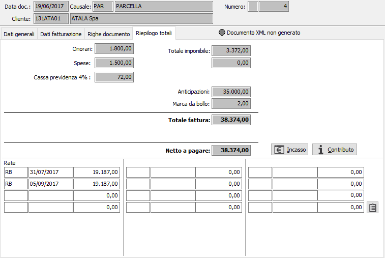
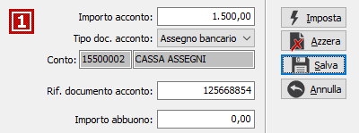
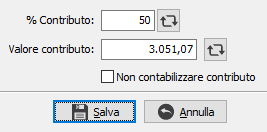

Riepilogo totali
L’ultima finestra video presenta i totali a valore del documento, con il relativo pulsante per accedere al Dettaglio scadenze. In questa fase è possibile definire anche il pagamento contestuale della parcella agendo sul pulsante Incasso. Se in configurazione base è attiva la gestione delle scadenze variabili l’utente avrà la possibilità di modificare le rate sia in termini di tipo pagamento, sia in termini di scadenza e di importi a condizione che il totale delle rate corrisponda al totale documento.


PULSANTE INCASSO: Il pulsante Incasso consente di inserire dati relativi all'incasso della parcella, premendo il pulsante compare la finestra di inserimento dei dati. In questa finestra è possibile inserire l'importo dell'acconto, il tipo di documento con cui viene effettuato il pagamento, selezionando tra contanti, assegno bancario, assegno circolare oppure bonifico; nel caso di bonifico è possibile inserire codice della banca su cui deve essere effettuato; è presente anche il campo 'Rif. documento acconto' dove è possibile annotare gli estremi del documento di incasso. È possibile inserire l'importo dell'eventuale abbuono nel campo 'Importo abbuono'. Il pulsante Imposta reinizializza i valori riportando il totale documento sull'importo acconto, il pulsante Azzera chiude la finestra azzerando tutti i valori, il pulsante Salva chiude la finestra salvando i valori presenti ed il pulsante Annulla chiude la finestra ripristinando i valori originali.

Se il cliente gestisce l'applicazione di un contributo, è presente il pulsante Contributo tramite cui accedere alla finestra relativa; da questa finestra è possibile modificare o aggiornare, tramite il pulsante accanto al valore, il valore del contributo calcolato in base alle informazione presente sulle prestazioni; è possibile anche inserire una percentuale, applicata al totale documento, e con il pulsante accanto aggiornare il valore; in fase di inserimento o variazione, con righe modificate, se il campo viene modificato e prima del salvataggio si esce dalla pagina del riepilogo totali il dato sarà ricalcolato e la modifica manuale andrà perduta. Il valore del contributo viene conteggiato come totale pagato assieme all’acconto e le rate generate saranno di conseguenza nette del contributo, se la casella "Non contabilizzare contributo" è spuntata il contributo non sarà decurtato dal totale e non sarà contabilizzato. Se presente il contributo sulla parcella la ritenuta d'acconto viene azzerata perchè se presente un contributo, di qualsiasi natura esso sia, non deve essere calcolata la ritenuta d'acconto. Se presenti dati la scritta sul pulsante si colora di blu.
RATA – TIPO PAGAMENTO: campi per contenere codici di Tipi pagamento da applicare a ciascuna delle rate. Sul campo sono attive le funzioni di ricerca (F9).
RATA – DATA SCADENZA: campi data per contenere le date di scadenza relative a ciascuna rata.
RATA – IMPORTO: campi numerici per contenere gli importi di ciascuna delle rate.
Al termine dell'inserimento dei dati, quando viene premuto il tasto F10 oppure il pulsante Salva nella tool bar compare, se configurato, la finestra di conferma della registrazione.
In fase di inserimento, al termine della registrazione, viene richiesto se si deve effettuare la stampa diretta del documento.